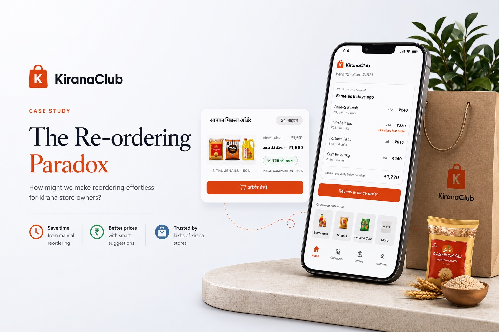
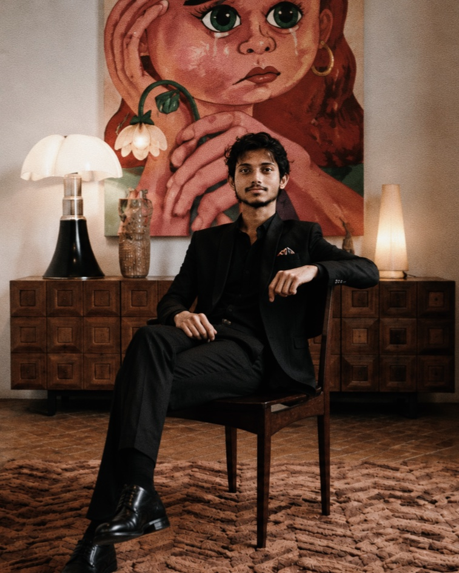

Hey,
I’m Vivek
— a product designer who’d rather show you one project properly than six of them briefly.

KiranaClub
A known-basket reordering flow for Kirana retailers who buy the same 20–30 products every time — and check every price before they trust it.
- Role
- Research + designsolo
- Span
- 2 weeksend to end
- Outcome
- 15–20min → 5–7min observed in testing, n = 3

About
I design product interfaces, mostly for things that are more complicated underneath than they look on the surface.
I care about the decision behind a screen more than the screen. Most of my process is arguing with myself about what to cut.